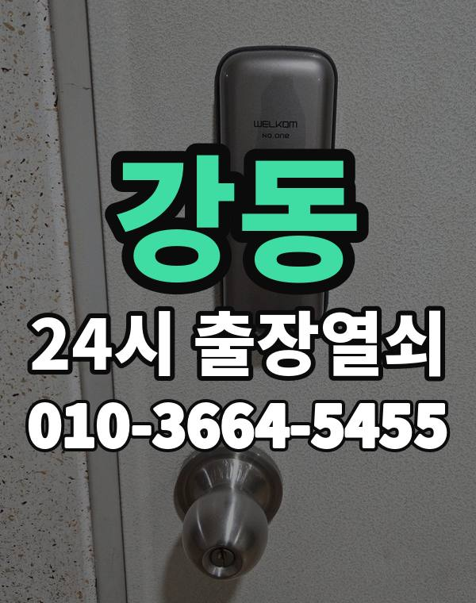

강동 출장 다니며 보는 동네
강동구는 고덕, 상일, 둔촌 새 아파트 단지와 천호동, 성내동 주택가가 나뉘어 있는 곳입니다.
새 아파트는 밀고 당기는 형, 주택가는 손잡이 일체형 도어락이 많습니다.

강동구 출장 가는 동네
- 강일동
- 상일동
- 명일동
- 고덕동
- 암사동
- 천호동
- 성내동
- 길동
- 둔촌동
강일동 출장열쇠, 상일동 열쇠집처럼 동네 이름으로 찾으셨어도 같은 곳입니다.
적혀 있지 않은 동네도 강동구 안이면 다 갑니다.
강동 출장 작업 종류
강동 출장, 이렇게 알려주세요
도어락 모양을 사진으로 보내주시면 맞는 장비를 챙겨 갑니다.
천호동 상가 출입문도 출동합니다.
천호역, 강동역, 고덕역, 길동역 근처라고 말씀해 주셔도 위치 잡기가 쉬워집니다.
가까운 역이나 큰 건물, 단지 이름을 같이 알려주세요.
- 정확한 주소, 아파트라면 동과 호수
- 번호판 상태 (꺼짐, 켜짐, 경고음)
- 거주 확인용 신분증이나 주소 나온 우편물
전화부터 작업까지 순서는 이용안내에 적어 두었습니다.
강동 출장열쇠 관련 글
- 강동구 암사동 손님이나 돌봄 선생님께 현관 번호를 알려줘야 할 때 임시 비밀번호 쓰는 요령
- 강동구 천호동 도어락 번호판이 꺼져 버렸을 때 배터리 방전 푸는 법과 미리 막는 습관
- 강동구 둔촌동 전월세 집 도어락이 고장 났을 때 집주인과 세입자가 함께 짚어 볼 것들
- 강동구 강일동 도어락 비밀번호를 잊었거나 가족이 번호를 바꿨을 때 차근차근 푸는 순서
- 강동구 강일동 도어락 교체를 고민할 때 견적 받기 전에 문과 제품을 살펴보는 방법
- 강동구 길동 명절이나 여행에서 돌아왔는데 현관문이 안 열릴 때 짐 내려놓고 할 일
- 강동구 고덕동 아이나 반려동물만 집에 두고 현관이 잠겼을 때 침착하게 움직이는 법
- 강동구 명일동 한파가 온 날 도어락 반응이 굼뜨거나 꺼질 때 추위 탓인지 가늠하는 기준
- 강동구 명일동 방문이나 화장실 문이 안에서 잠겨 버렸을 때 집 안에서 먼저 해볼 일
- 강동구 상일동 도어락에서 경고음만 울리고 모터 소리만 날 때 증상별로 살펴보기
- 강동구 상일동 상가나 사무실 출입문이 안 열려 영업을 못 할 때 사장님이 먼저 챙길 것
- 강동구 성내동 현관 데드볼트가 안 들어가거나 안 빠질 때 문틀부터 살펴보는 이유
강동 출장열쇠 자주 묻는 질문
강동 어디까지 출장 오시나요?
강일동, 상일동, 명일동, 고덕동, 암사동, 천호동 등 강동구 전 지역 갑니다. 적혀 있지 않은 동네도 강동구 안이면 출동합니다.
새벽에 강동에서 전화해도 되나요?
24시간 전화 받고 출동합니다. 위치를 알려주시면 도착 예상 시간을 먼저 말씀드립니다.
끝내 못 열면 돈은 어떻게 되나요?
못 열면 비용은 받지 않습니다. 비용은 작업 전에 먼저 말씀드리고, 괜찮다고 하시면 시작합니다.
세입자도 문을 열어 주시나요?
사시는 분이 맞는지만 확인되면 됩니다. 신분증이나 우편물을 준비해 주세요.
강동 도어락 새로 다는 것도 되나요?
네, 수리와 설치, 교체 모두 합니다. 고쳐서 쓸 수 있으면 고치는 쪽을 먼저 말씀드립니다.